Case 14
Case 14
Case Vignette
56-year-old woman with long-standing plaque psoriasis, referred with two years of bilateral hand arthralgia. (Expand for full history, exam & the complete scan.)
A 56-year-old woman with a 20-year history of plaque psoriasis and nail pitting, currently well controlled on risankizumab (an IL-23 inhibitor), is referred to the rheumatology clinic with hand arthralgia over the last two years. Her dermatologist is concerned about the development of possible psoriatic arthritis and is wondering whether the biologic needs to be changed.
She describes arthralgia over the DIP and PIP joints of both hands. It came on insidiously but has worsened over the last six months, which is also when she noticed more swelling at the DIP joints. She reports some boggy swelling that fluctuates, and some hard nodular swelling that is persistent — "it has never gone back to looking normal." She has also noticed some nail pitting in the last six months. Morning stiffness in the hands lasts about 20–30 minutes, and the hands feel stiff and gelled if she has not used them for a while, but in general the pain is worse with use and in the evenings. Symptoms respond dramatically to naproxen 220 mg twice daily, which her family physician asked her to use. There is no night pain. There is no swelling or pain at other joints, no symptoms or signs of dactylitis, no entheseal pain or swelling, and no inflammatory back pain.
She is otherwise healthy with no chronic medical conditions. She has had two Caesarean sections and an appendectomy, and entered menopause three years ago. She takes no regular medications other than risankizumab and as-needed naproxen. Family history is non-contributory. She neither drinks nor smokes. She works as executive director of a non-profit organization and has found some of the fine motor work in her job difficult.
Examination reveals nodular changes with bogginess and effusions at most of the DIP joints, which are tender. There is no swelling at the PIP joints, though a few are tender. The rest of the musculoskeletal examination is normal. She has no active skin psoriasis but does show nail pitting in the second digits bilaterally. No investigations have been done yet.
The clinical assessment certainly suggests nodal hand osteoarthritis. However, you are not sure whether there is concomitant psoriatic arthritis, given some of her inflammatory symptoms and the nail involvement alongside DIP symptoms and swelling. So you decide to perform a bedside musculoskeletal ultrasound of the DIP joints.
Bedside Ultrasound — Second DIP Joint
Longitudinal
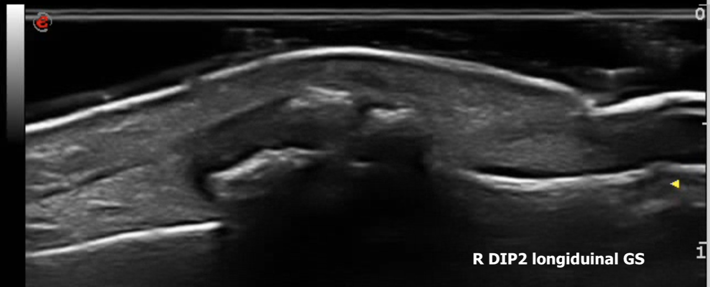
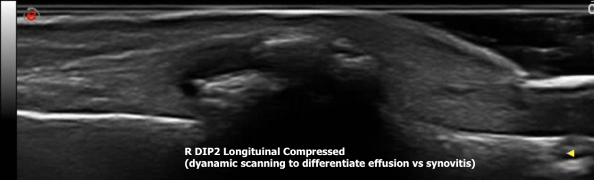
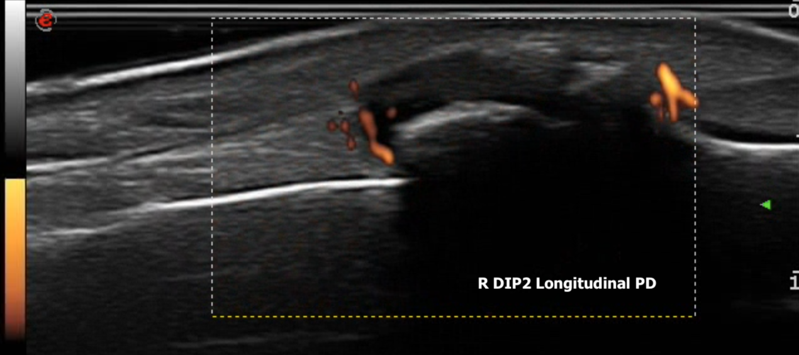
Transverse
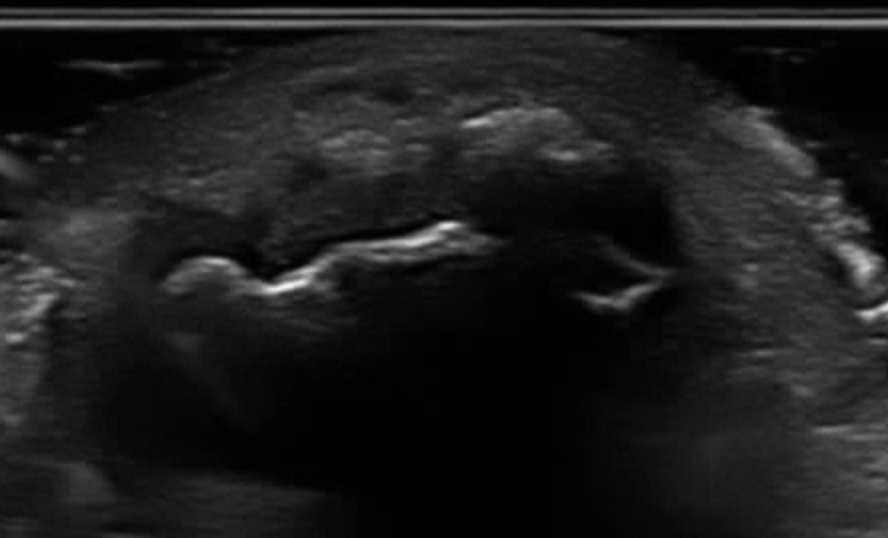
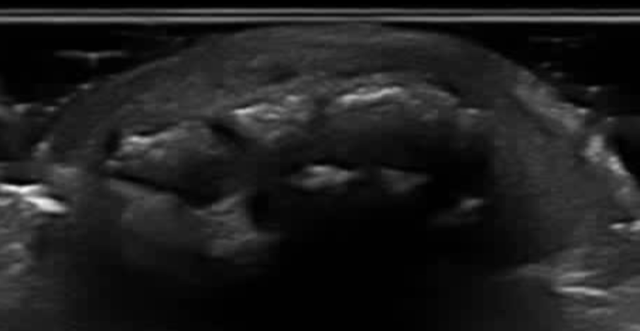
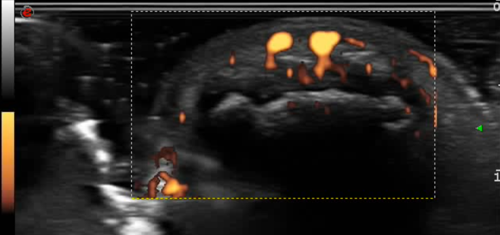
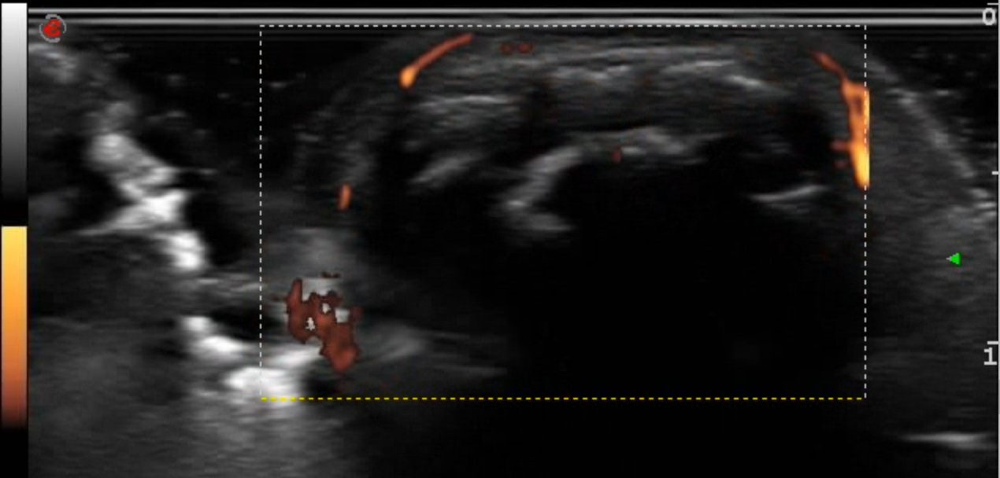
Second DIP Joint — Longitudinal and Transverse
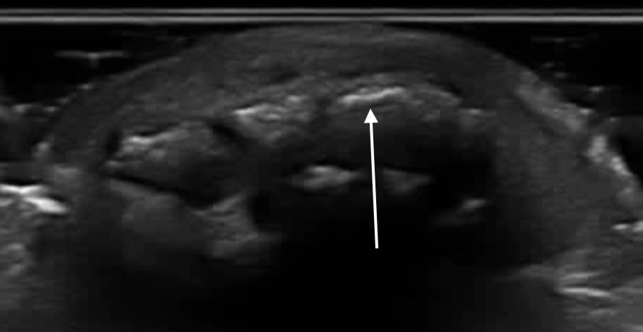
The two can be confused on ultrasound, but the terms are not interchangeable. They can coexist, but sit in different locations with different characteristics. Adjacent tendon pathology and hyperemia on Doppler may be present with either.
Osteophyte
- Hyperechoic bony overgrowth
- Intra-articular or peri-articular location
- Ossification within a tendon or ligament
- Located at the enthesis
- Linear orientation of the bony proliferation, parallel to the tendon, following the direction of pull
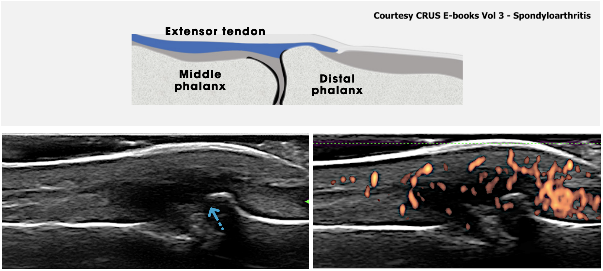
Second DIP Joint — Longitudinal and Transverse
It is often confused with, or erroneously called, an erosion because of the break in the cortex. However, acoustic shadowing will change or disappear with probe angle (heel-toeing, for example), and you will usually find a highly reflective cortex above it — an osteophyte, enthesophyte or calcification. An erosion will not usually have a hyperechoic cortex above it, unless there is an overhanging edge, and it will persist despite changes in probe angle in both planes. Dynamic scanning is therefore the most useful differentiator.
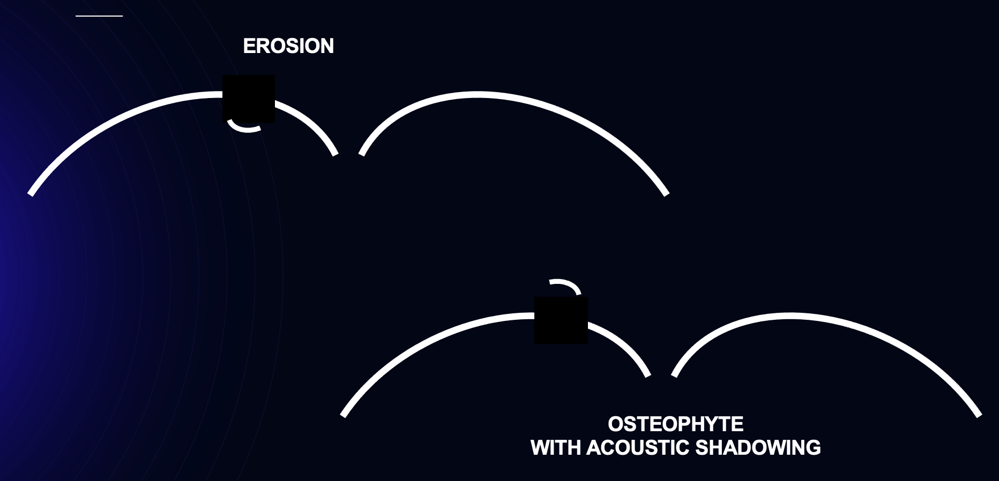
Second DIP Joint — Transverse, Power Doppler
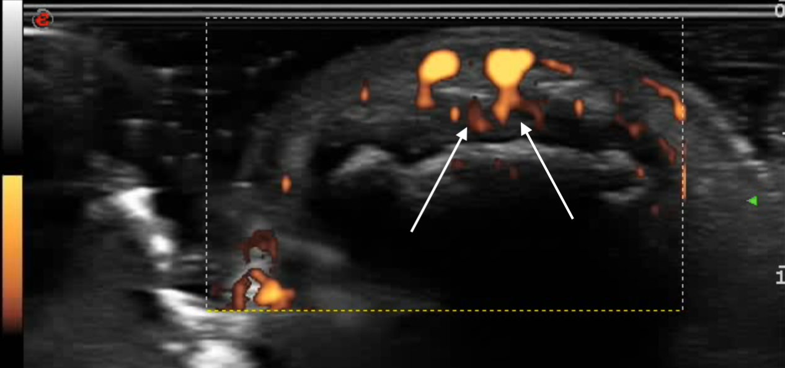

The compression test (seen in the images) is the way to settle it. Apply gentle pressure with the transducer to collapse the superficial vein or artery; as true flow ceases, the deep Doppler artifact should disappear simultaneously. If Doppler signal remains within synovial tissue or around the tendon despite collapse of the superficial vessel, it is much more likely to represent true vascularity, and therefore inflammation. Compress only to the point of just obliterating the superficial vessel — press too hard on small joints and you will obliterate true synovial vascularity as well.
This is a common pitfall for beginners scanning the MCP and PIP joints, where dorsal veins overlie the joint and can create a false impression of active synovitis.
Select all correct answers.
Bone
- Cortical irregularity
- Osteophytes
- Erosions (erosive OA)
- Thinning
- Focal loss
- Loss of cartilage interface sharpness (blurred superficial margin)
- Effusion
- Hypertrophy
- Doppler signal (in inflammatory OA)
- Intra-articular loose bodies (often punctate hyperechoic lesions)
- Cysts (for example ganglion cysts)
- Calcification

Flexor tenosynovitis is hypoechoic or anechoic thickened tissue, with or without fluid, within the tendon sheath, seen in two perpendicular planes and possibly exhibiting power Doppler signal. It is associated more with inflammatory etiologies (RA, PsA, crystal flares, infectious tenosynovitis), and can be seen in stenosing or overuse tenosynovitis (trigger finger). It is uncommon in OA — and if you see flexor tenosynovitis, especially in multiple fingers, your suspicion of inflammatory pathology should be higher.

You have already seen the changes at the DIP joints. Ultrasound of the MCP joints, PIP joints and flexor tendons is normal. You are more confident now that this is all osteoarthritis — but since you are just beginning to do MSK ultrasound, you still wonder whether the changes at the DIP joint could be enthesitis.
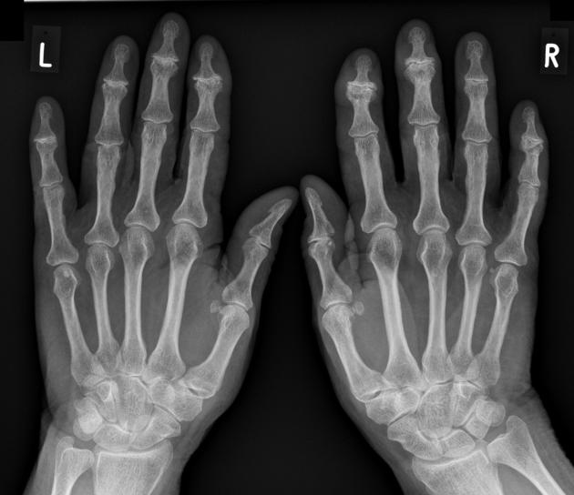
In this case the X-rays clearly show findings of osteoarthritis at the DIP joints, with no features of psoriatic arthritis. With a low pre-test probability of PsA or inflammatory arthritis based on the clinical presentation, examination and bedside MSK ultrasound, the X-ray is the best low-cost, rapid test to add to your clinical and sonographic diagnosis.
A formal ultrasound is helpful when starting out with bedside MSK ultrasound in moderate or higher pre-test probability situations, to get confirmation and increase confidence in your interpretation. An MRI is unnecessary here and is not Choosing Wisely for this clinical presentation. An HLA-B27 will not change diagnosis or management — even if it were positive given her history of psoriasis, the clinical, radiographic and sonographic findings point more towards OA. The X-ray is therefore the most helpful in confirming your bedside diagnosis.